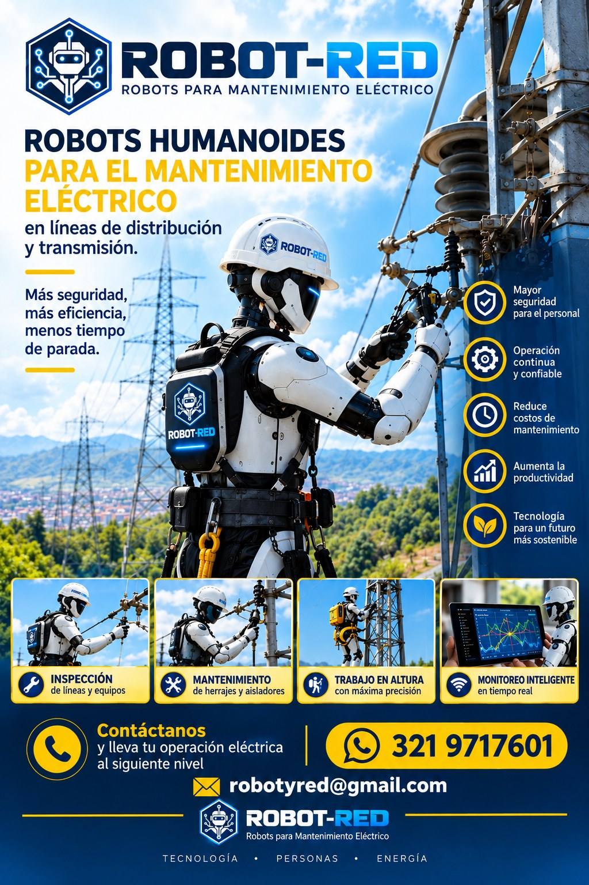

Riesgo para las personas
Descargas, arcos eléctricos, caídas y trabajos en suspensión siguen siendo la principal causa de accidentes graves en la operación de red.
Mantenimiento eléctrico autónomo
ROBOT-RED opera plataformas robóticas autónomas sobre líneas de distribución y transmisión energizadas: detectan fallas, actúan sobre los activos y entregan evidencia trazable — sin cortar el servicio ni exponer cuadrillas.
Cifras de diseño del programa ROBOT-RED X, no resultados medidos en campo. Cada valor se valida por tramo durante el piloto.
El problema
Las compañías siguen dependiendo de inspecciones visuales manuales, cuadrillas en altura y sobrevuelos ocasionales. Ese modelo tiene un techo: es caro, peligroso y llega tarde.
Descargas, arcos eléctricos, caídas y trabajos en suspensión siguen siendo la principal causa de accidentes graves en la operación de red.
Cuando la ventana operativa es de uno o dos recorridos al año, el defecto tiene meses para crecer antes de ser visto.
Cuadrillas certificadas, vehículos, equipos de aislamiento, transporte y tiempos muertos encarecen cada recorrido.
Corrosión en herrajes, conexiones aflojadas, fatiga de conductor, corona y sobrecalentamientos no son visibles a simple vista.
Cuando el síntoma finalmente aparece, el daño ya es más costoso y la probabilidad de interrupción, considerablemente mayor.
Libro Blanco de Ingeniería · INSTE-BOT X — Tomo I
Soluciones
Un mismo ecosistema robótico cubre la cadena completa: percibir, diagnosticar, actuar y reportar.
Recorrido sobre el conductor con captura 8K, térmica radiométrica, UV y LiDAR. Cruza grapas, empalmes, separadores y aisladores sin detenerse.
Vuelo rápido sobre torres, cruces y zonas de difícil acceso para complementar al robot cuando la prioridad es cobertura amplia en poco tiempo.
Detección de puntos calientes con cámara radiométrica ±2 °C y clasificación automática de severidad por diferencia de temperatura.
Brazos de 7 GDL con cambio automático de herramienta para ajustar conexiones, limpiar herrajes y aplicar protección anticorrosiva sobre línea energizada.
Instalación de nodos sensores por el propio robot para vigilar vibración, temperatura, campo eléctrico y humedad más allá de la visita.
Cada inspección alimenta un modelo que estima vida útil, riesgo y ventana óptima de intervención sobre un gemelo digital de su red.
El producto
No es un dron con cámara: es una unidad de inspección y actuación que se desplaza por el propio conductor, diagnostica con IA y ejecuta mantenimiento con sus brazos.
Configuración monocuerpo modular · 4 puntos de contacto adaptables
Tecnología
La arquitectura encadena cinco etapas. Cada inspección alimenta el modelo global, y el modelo global mejora a cada unidad.
Corrosión, fisuras en aisladores, vegetación peligrosa y daños mecánicos detectados automáticamente en el borde.
Clasificación de puntos calientes por severidad y tendencia histórica por conexión.
Cámara UV solar-blind que identifica descargas parciales antes de la falla de aislamiento.
SLAM con LiDAR, fusión IMU/GNSS RTK y odometría para operar sin GPS continuo.
Modelo virtual de la red que simula escenarios y optimiza la ventana de intervención.
Reparto de tramos entre unidades y ciclo de mejora continua entre robots e inteligencia global.
Ecosistema ROBOT-RED
Casos de uso

El robot recorre una línea de distribución durante la noche y devuelve fotografías, modelo 3D y mapas térmicos del tramo completo, sin cuadrilla ni corte.
La cámara térmica identifica un conector caliente; la IA clasifica prioridad ALTA, riesgo de falla inminente y acción recomendada, y abre la orden de trabajo.
El brazo robótico aplica protección anticorrosiva y ajusta herrajes sin necesidad de una cuadrilla de trabajo en tensión.
Los brazos colocan nodos de monitoreo sobre el activo y la telemetría comienza a fluir al centro de control en el mismo recorrido.
Resultados
Se retira al personal de altura y de trabajos en tensión: el robot asume el recorrido y la manipulación.
Inspección y mantenimiento sobre línea energizada, sin ventanas de corte ni reclamos por interrupción.
Menos cuadrillas, menos vehículos, menos desplazamientos y una frecuencia de inspección que antes era impensable.
El mantenimiento correctivo se reemplaza por intervención programada en la ventana óptima.
Historial completo y auditable por activo, con fotografía, temperatura, ubicación y estado en el momento de la medición.
De un tramo piloto a toda una zona de servicio, sumando unidades a la flota sin rediseñar el proceso.
Cumplimiento normativo
Cada entrega incluye evidencia georreferenciada, condiciones de medición y trazabilidad por activo, alineadas con los requisitos de inspección y mantenimiento aplicables.
Solicitar matriz de cumplimientoCómo trabajamos
Caracterización de tramos prioritarios, condiciones de acceso y definición de métricas de éxito.
Validación de sensores, modelos y procedimientos sobre réplicas de herrajes y conductor.
Operación supervisada sobre un tramo real con entrega de informes y ajuste de modelos.
Rutina de patrullaje, integración con su centro de control y formación de su equipo.
Cobertura por zona con coordinación multi-robot y analítica predictiva sobre toda la red.
Preguntas frecuentes
Sí. La plataforma está concebida para operar sobre infraestructura energizada, con aislamiento galvánico, apantallamiento electromagnético y protección contra sobretensiones. Toda operación se planifica bajo los procedimientos de seguridad y las autorizaciones de su compañía.
No. Reemplaza las tareas de mayor riesgo y repetitividad: recorridos en altura, manipulación en tensión y captura manual de evidencia. Su equipo pasa a supervisar, priorizar y ejecutar las intervenciones que requieren criterio.
Distribución y transmisión aéreas con conductores desnudos o aislados. La locomoción es adaptable al diámetro y cruza grapas, empalmes, manguitos, separadores, amortiguadores y aisladores de suspensión.
Corrosión y oxidación de herrajes, aflojamiento de conexiones, fatiga mecánica de conductores, fisuras y contaminación de aisladores, sobrecalentamientos, descargas parciales y corona, además de vegetación en distancia de seguridad.
Todo converge en ROBOT-RED CLOUD: alertas, imágenes, mapas térmicos, modelo 3D e informes por activo. La plataforma expone una API REST y puede integrarse con sus sistemas GIS, SCADA y de gestión de mantenimiento.
Un piloto típico se estructura en fases de diagnóstico, validación y operación supervisada antes de pasar a operación industrial. El calendario exacto depende del número de tramos, accesos y requisitos de su compañía.
Los enlaces son redundantes (5G / LoRa / satelital) y el robot mantiene lógica de seguridad embarcada: completa la acción segura, se retira a una posición segura y reanuda o regresa a la estación según el protocolo definido.
Sí. El Libro Blanco de Ingeniería (arquitectura, estado del arte, diseño mecánico, sistema sensorial y brazos) está disponible en el área técnica para equipos de ingeniería y evaluación técnica.
Siguiente paso
Cuéntenos qué tramos quiere inspeccionar y prepararemos una sesión con su equipo de operación e ingeniería.
Robótica e ingeniería para redes eléctricas.
Medellín, Colombia
La documentación de desarrollo vive en el área técnica. Esta página es el canal comercial.